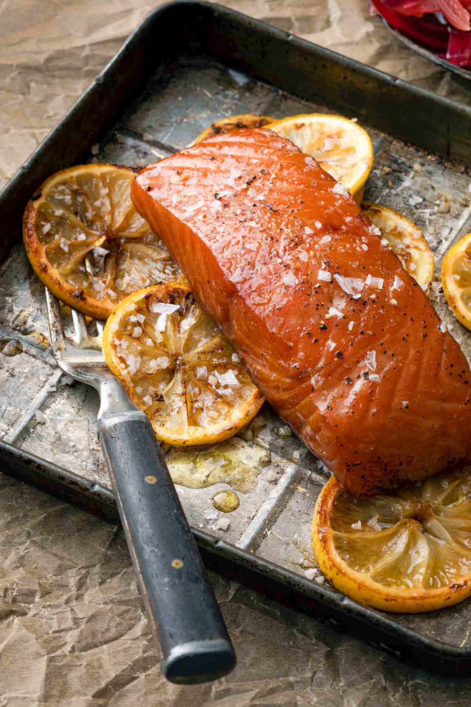

Smoking Joe's BBQ - Smoked Salmon

Recipe
- Cure for 4 hours using kosher salt and brown sugar.
- Rinse after curing, pat dry, and let salmon dry uncovered in refrigerator for 4 to 20 hours
- Place salmon on prepared foil sling on cooking grate.
- Smoke at 225-250°F for 60-70 minutes to an internal temperature of 140°F.